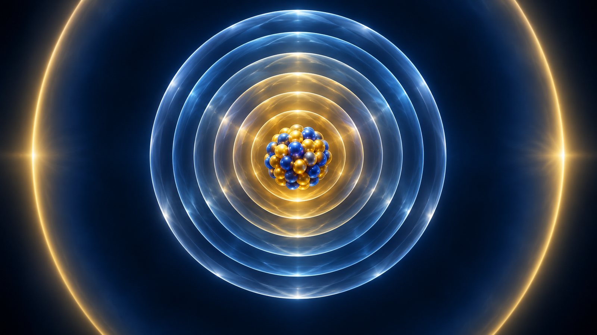
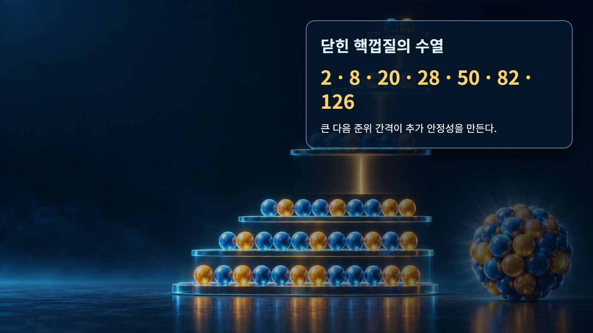
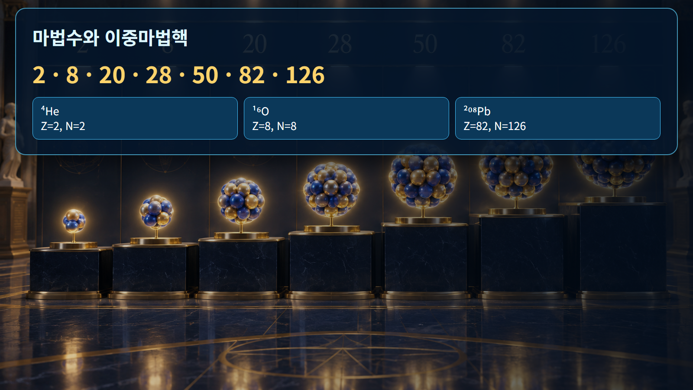

핵물리 기초 · 016
마법수
양성자수 또는 중성자수가 닫힌 핵껍질을 이루어 특별한 안정성을 보이는 수

마법수 2, 8, 20, 28, 50, 82와 중성자 126은 핵준위의 큰 간격에서 나타납니다. 이 수만큼 양성자나 중성자가 채워지면 다음 핵자를 훨씬 높은 준위에 넣어야 하므로 닫힌 껍질이 형성됩니다. 양성자수와 중성자수가 모두 마법수이면 이중마법핵이라 부릅니다.
개념 정의
마법수 2, 8, 20, 28, 50, 82와 중성자 126은 핵준위의 큰 간격에서 나타납니다. 이 수만큼 양성자나 중성자가 채워지면 다음 핵자를 훨씬 높은 준위에 넣어야 하므로 닫힌 껍질이 형성됩니다. 양성자수와 중성자수가 모두 마법수이면 이중마법핵이라 부릅니다.
마법수의 개념 정의에서는 이 개념은 하나의 그림이나 비유만으로 고정되지 않습니다. 마법수의 개념 정의에서는 양성자수와 중성자수, 에너지 준위, 계의 경계를 함께 정하고 어떤 관측량을 설명하려는지 먼저 구분해야 합니다. 마법수의 개념 정의에서는 같은 핵에서도 바닥상태와 들뜬상태의 구조가 다를 수 있습니다.
작동 원리
마법수 부근에서는 첫 들뜬상태 에너지가 높고, 핵자를 하나 떼는 에너지의 변화가 크며, 구형에 가까운 경향이 나타납니다. 특히 스핀-궤도 결합이 큰 껍질간격을 만들어 단순 조화진동자 순서로는 설명되지 않는 28, 50, 82, 126이 형성됩니다.
마법수의 작동 원리에서는 원리식은 물리적 방향과 크기척도를 제공하지만 실제 핵종의 수치는 질량·준위·반응 자료로 확인합니다. 마법수의 작동 원리에서는 보존법칙을 먼저 적용하고, 모형이 생략한 잔류상호작용과 집단효과가 필요한 정밀도인지 판단합니다.

단계별 계산과 상황 예시
예시 1｜헬륨-4는 Z=2, N=2라 두 수가 모두 마법수인 이중마법핵입니다. 양성자와 중성자 껍질이 각각 닫혀 있어 핵자당 결합과 첫 들뜸에너지에서 뚜렷한 안정성 신호를 보입니다. 단, ‘절대 붕괴하지 않는다’는 뜻은 아닙니다.
예시 2｜납-208은 Z=82, N=126인 이중마법핵입니다. 우라늄-235는 Z=92, N=143으로 닫힌 껍질에서 벗어나 있습니다. 두 핵의 안정성 차이를 질량수만으로 설명하기보다 껍질구조와 쿨롱 반발을 함께 봐야 합니다.
| 구분 | 대표 조건 | 해석 |
|---|---|---|
| 2, 8, 20 | 가벼운 핵 | 닫힌 껍질 |
| 28, 50, 82 | 중·무거운 핵 | 스핀-궤도 효과 중요 |
| 126 | 중성자 마법수 | 납-208의 닫힌 껍질 |

원자력공학의 실제 적용
마법수는 핵질량 평가, 분리에너지의 급변, 핵종도 안정선과 핵합성 경로를 해석하는 기준입니다. 원자로에서 생성되는 방사성 핵종의 붕괴사슬과 핵분열생성물 분포에도 닫힌 껍질 근처의 구조효과가 반영됩니다.
마법수의 원자력공학의 실제 적용에서는 예비평가에서는 대표값으로 경향을 확인하고 상세평가에서는 핵종·에너지·온도에 맞는 평가자료를 사용합니다. 마법수의 원자력공학의 실제 적용에서는 결과에는 입력값, 단위, 자료 버전, 중간 계산과 적용범위를 함께 기록합니다. 마법수의 원자력공학의 실제 적용에서는 계산과 측정이 다르면 입력자료, 계의 경계, 누락된 상태나 반응경로 순으로 추적합니다.
오해와 적용 한계
마법수가 행운의 숫자이거나 그 수의 핵이 모두 안정하다는 뜻은 아닙니다. 양성자 마법수인지 중성자 마법수인지 구분해야 하며, 매우 중성자 과잉인 핵에서는 전통적 껍질간격이 변할 수 있습니다. 핵종별 실험 준위와 질량자료로 확인해야 합니다.
마법수의 오해와 적용 한계에서는 이미지는 핵자와 힘을 눈에 보이게 확대한 개념 표현이며 실제 크기·거리·시간 비율이 아닙니다. 마법수의 오해와 적용 한계에서는 비유가 양자상태를 고전 궤적으로 바꾸지 않도록 주의하고, 정량 결론은 핵종별 실험자료와 불확실성을 포함해 판단합니다.
핵심 정리
마법수은 핵의 집단적 경향과 개별 양자상태를 구분해 읽는 출발점입니다. 마법수의 핵심 정리에서는 정의와 작동 원리를 확인한 뒤 두 예시처럼 입력·단위·계산·해석을 나누면 공식이 설명하는 범위가 선명해집니다. 마법수의 핵심 정리에서는 실제 적용에서는 서로 다른 모형의 강점과 한계를 비교하고 검증된 핵자료로 수치를 보완합니다.
마법수의 핵심 정리에서는 검토자는 값이 그럴듯한지만 보지 않고 보존법칙, 차원, 극한조건을 독립적으로 검사합니다. 마법수의 핵심 정리에서는 자료가 없는 영역의 보간과 외삽을 구분하며, 불확실성이 설계판단에 미치는 민감도를 함께 제시해야 합니다. 마법수의 핵심 정리에서는 서로 다른 모형이 같은 관측량을 설명할 때에는 계산값뿐 아니라 가정, 필요한 입력자료와 적용 가능한 핵종 범위를 같은 표에서 비교합니다.